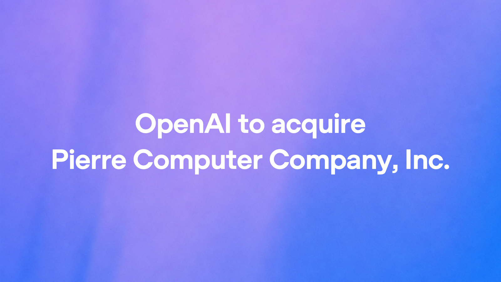
OpenAI
OpenAI拟收购Pierre，补强代码协作
来源: OpenAI · 2026-11-05 · 原文链接
OpenAI于11月4日宣布将收购Pierre Computer Company，后者开发Code Storage以及Trees、Diffs等开源工具；Codex的文件浏览和变更审阅已使用这些库。双方计划改进开发者与多个代码智能体并行工作的Git协作。交易金额未公布，交割仍须满足惯常条件及监管批准，交割前两家公司独立运营。OpenAI称相关开源项目会继续开源，Code Storage客户也可继续使用服务。
Janet 锐评：
代码能同时写出十个分支，读懂十个分支仍然占用人的注意力。Pierre已有的差异浏览与就地修改，比再加一个聊天入口更贴近这个瓶颈。收购计划也透露了Codex的方向：从一个会写代码的窗口，延伸到团队共同判断、修改和交付的位置。能否减少审阅负担，要等产品真正接进来才有答案。
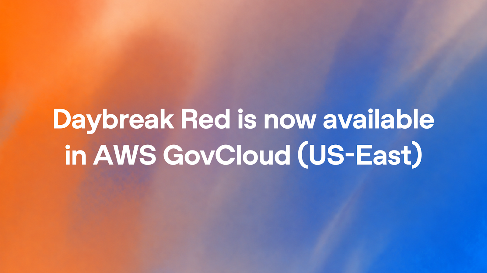
OpenAI
Daybreak Red接入美国政府云东区
来源: OpenAI · 2026-11-05 · 原文链接
11月4日，OpenAI宣布GPT-5.6 Cyber可通过Daybreak Red在AWS GovCloud（US-East）供获批客户使用，属于既有安全模型的区域与渠道扩展。接入同时需要OpenAI资格审批与AWS开通，前者获批不会自动启用后者。用途包括获授权的漏洞研究和安全测试；发现与修复方案仍须专业人员复核。
Janet 锐评：
政府云里的可用性是一道具体的采购与部署门槛。模型名字没换，能够在哪个环境运行却变了；两家的开通步骤也说明，获得模型资格与拿到实际服务之间仍有一段距离。
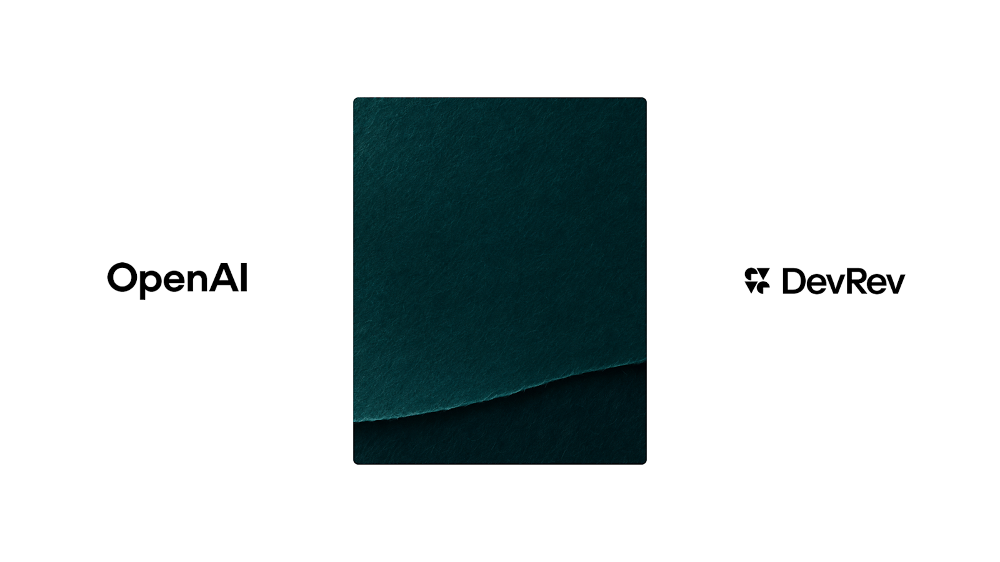
OpenAI／DevRev
DevRev发布企业自助服务新案例
来源: OpenAI／DevRev · 2026-11-05 · 原文链接
OpenAI在11月4日首次发布DevRev应用案例，介绍Computer与Operator如何结合GPT-6 Astra、GPT-6.1 Sol及公司自身的智能体运行框架处理企业服务请求。DevRev称操作可撤回、回答能回到来源，并以多版本资料、跨系统数据和角色权限评估系统。这是当天新案例报道，相关产品与模型并非当天首次推出；效果主要来自企业自述。
Janet 锐评：
客服问答里最麻烦的往往是同一制度有三个版本、同一客户在两个系统里。这个案例交代了信息和行动怎样受控，却没有给出足以横向比较的独立成绩。能读出它的设计取舍，已经比照搬客户证言有用。
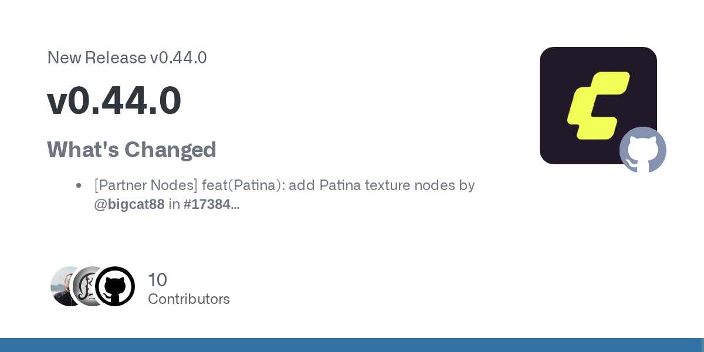
ComfyUI官方GitHub Release
ComfyUI支持视频工作流输出ProRes
来源: ComfyUI官方GitHub Release · 2026-11-05 · 原文链接
ComfyUI于11月4日01:12 UTC发布v0.44.0。官方更新记录包含视频保存的ProRes与不同色度采样支持、VAE计算数据类型控制，以及MiniMax-H3相关本地组件支持；合作方节点还加入若干图像、配音与视频操作。这里报道的是工作流软件版本，节点接入不代表所连接的模型在同一天首发，外部服务的账号和费用也独立存在。
Janet 锐评：
剪辑流程常被最后一步格式卡住。ProRes输出比一张漂亮的节点截图更接近后期交接，但编码格式解决的是素材运输；画面是否连贯、声音是否对齐，仍是另两件事。
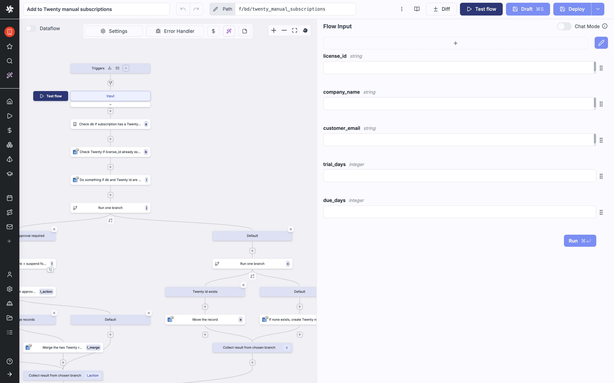
wind 官方仓库对应版本 README 工作流界面（产品示意，非此次改动截图）
Windmill加入流程总超时控制
来源: Windmill官方GitHub Release · 2026-11-05 · 原文链接
Windmill在11月4日19:48 UTC发布v1.861.0，加入流程级墙钟时间超时、按运行筛选日志、运行图表控制等功能，并修复Git同步自动拉取可能用自身提交回退编辑的问题。当天随后发布的v1.862.0主要修补界面与导航；总超时功能的来源版本为v1.861.0。
Janet 锐评：
每个步骤都没超时，串起来的整项任务也可能耗尽一个上午。给流程整体计时，对有多个模型与外部请求的自动化很实际：等待终于有了一个总上限。
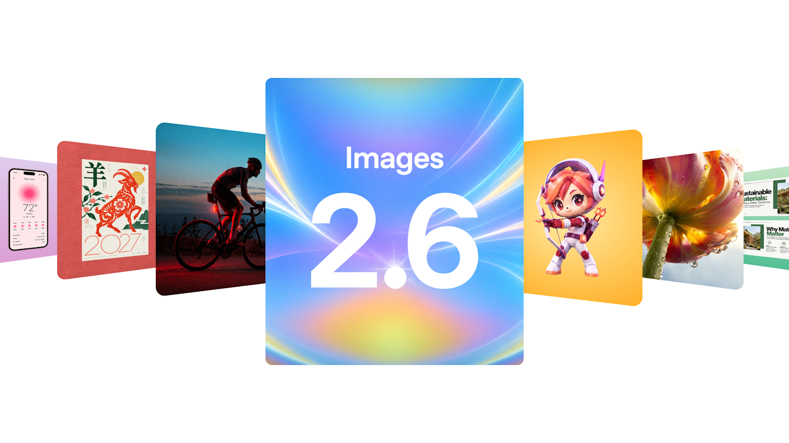
OpenAI
Images 2.6加入GIF与SVG导出
来源: OpenAI · 2026-11-05 · 原文链接
OpenAI于11月4日上线Images 2.6，覆盖ChatGPT、Codex及API；API提供Flare与Sunburst两种选择。此次增加GIF制作、API图像标记和SVG导出，并引入complexity参数控制构图规划投入，quality则控制视觉细节。官方称整体生成更快，低质量档Flare最快可约6秒出图；这属于厂商条件下的表述，复杂编辑不等于同样耗时。
Janet 锐评：
对反复改稿的人，保住同一个角色、商品和品牌细节，比再抽一次漂亮盲盒更省力。GIF又把一次生成延伸成一个小动作，适合表情、角色草稿和社交素材。不过，复杂度与画质是两根独立旋钮；把每项都推到最高，未必符合一次局部修改的工作量。真正有吸引力的是更短的来回，而非一个孤立的最快秒数。
腾讯云 ADP 官方 Hy4 上架活动海报
腾讯发布Hy4，权重仍待公布
来源: 腾讯官方新闻稿／腾讯云ADP · 2026-11-05 · 原文链接
腾讯于11月4日发布Hy4正式版，在原有预览版基础上增加视觉理解与电脑操作能力，并面向长程任务优化。官方称模型已在TokenHub、WorkBuddy、CodeBuddy等产品提供，模型权重与系统卡计划近日公布；因此不能把当天状态写成权重已可下载。腾讯云ADP也已接入正式版。本文不沿用旧预览版参数冒充新版已确认规格。
Janet 锐评：
正式版能调用，与正式版权重能下载，是两张不同的通行证。看图、操控界面和专业软件任务把它推向更复杂的工作，但在系统卡与权重到手之前，外界能检查的范围仍主要由产品入口决定。
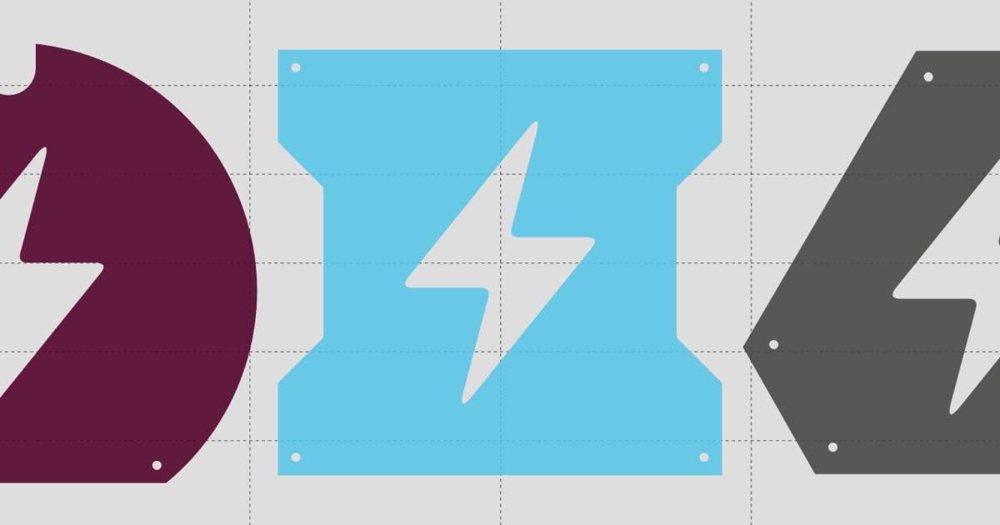
Cognition
Cognition发布低成本SWE-2 Flash
来源: Cognition · 2026-11-05 · 原文链接
Cognition于11月4日发布SWE-2 Flash，基于Thinking Machines的Inkling-Small继续中期训练与强化学习，总参数276B、每次激活12B。它已进入Devin Desktop与CLI，厂商称价格为SWE-2的五分之一、速度约三倍。网页200对60 token/s的演示为按设定速度回放，不能当作独立实测。权重尚未公开，可信伙伴与研究机构共享计划仍在筹备。
Janet 锐评：
把文档整理、常规代码修改交给较便宜的模型，是比所有任务都争第一更实际的定位。276B总参数也提醒人：激活少不等于整套权重很小，暂未公开的共享计划更不等于今天能在本地运行。
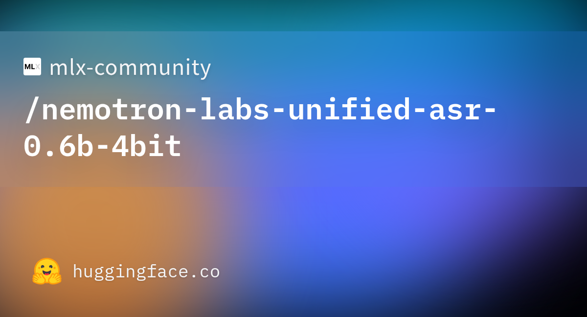
Hugging Face：对应量化仓库卡片
MLX社区发布轻量语音转换版
来源: mlx-community模型卡 · 2026-11-05 · 原文链接
mlx-community在11月4日14:08 UTC新建Nemotron Labs Unified ASR 0.6B的4-bit MLX转换版，模型卡标注权重约472MB，基于NVIDIA指定修订转换，沿用OpenMDW 1.1许可。这是社区量化转换，不是NVIDIA当天发布新基础模型。模型卡描述16kHz单声道输入、离线与缓冲流式转写，并提醒原版误字率表不能直接代表量化版；量化主要省内存，不保证提速。
Janet 锐评：
472MB让Mac上的转写试验容易开头，口音、人名和背景声则不会随文件一起压缩。转换者明确写出量化不一定加速，这句限制反倒比“轻量”二字更能帮助人选型。
 OpenAI
OpenAI
OpenAI用流水线验证948条提权路径
来源: OpenAI · 2026-11-05 · 原文链接
OpenAI于11月4日首次披露10月中旬一次Linux内核安全研究：流水线分析2308个候选发现，动态复现1724个漏洞，并生成948个有效本地提权验证及候选补丁，API消耗约121万美元。研究使用尚未公开的安全模型，在受控环境运行；人员复核后向维护者报告。948不是已被上游合入的补丁数，报告中的假设赏金价值也不是实际收入。
Janet 锐评：
扫描能批量运行，维护者的判断却不能按同样比例无限扩张。2308到1724再到948，至少让人看见发现、复现与可利用性之间的筛选，而不是把一串告警当作修复成果。真正影响防守的是可复核的报告与可接受的补丁能否及时抵达；候选补丁写出来，只走完了其中一段。
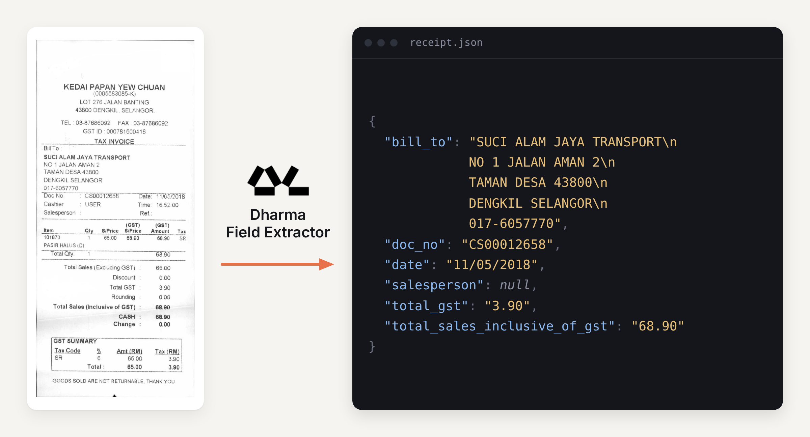
Dharma-AI／Hugging Face
Dharma用20亿参数提取文档字段
来源: Dharma-AI／Hugging Face · 2026-11-05 · 原文链接
Dharma-AI于11月4日发表Field Extractor技术文章：在20亿参数OCR底座上以43384条样本训练LoRA，让文档图片按指定schema输出嵌套JSON，缺失字段返回null。作者在546份文档、1638种请求案例上自测；成本比较使用单张L40S每小时2.24美元的GPU时间，并非对外售价。自托管与API的计价口径不同，不能把该倍率直接当采购折扣。
Janet 锐评：
一份发票最终要进入数据库时，完整抄出整页常常还不够。指定字段、类型和空值的价值，在于减少下一段映射代码；作者同时交代成本口径，读者才知道比较的是一次计算，还是已经包含维护的服务。
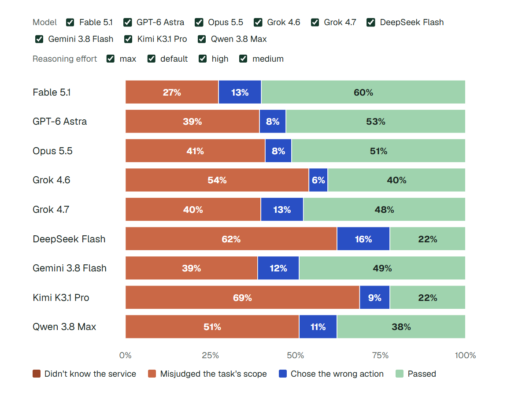
CloudOpsBench失败分析图，The Decoder原文收录
CloudOpsBench用45项任务测云操作
来源: The Decoder当日新报道／CloudOpsBench原仓库 · 2026-11-05 · 原文链接
11月4日，The Decoder首次报道CloudOpsBench的45项AWS运维任务，基础项目已更早公开。原始仓库提供初始状态、任务说明、检查器和参考解法，覆盖清理资源、修复连接及收紧访问等操作。仓库说明执行后端仍有私有部分，克隆任务库本身不能得到完整运行系统；打包检查也不代表任务已全量执行。本文采用原仓库可核验的范围，不混用媒体数字与后来变化的排行榜。
Janet 锐评：
删掉一个废弃队列并不难，难的是找到所有该删的队列，同时留住旁边仍在使用的资源。运维考题的边界感很有价值，公开任务与开放可复现的整套运行环境却还隔着一步。
 Anthropic 原文 L05 vault 冷冻电镜结构图
Anthropic 原文 L05 vault 冷冻电镜结构图
Anthropic用Claude解析穹隆颗粒结构
来源: Anthropic生物研究团队 · 2026-11-05 · 原文链接
Anthropic于11月4日发布生物研究，展示由细菌噬菌体蛋白组成的L05穹隆颗粒三维结构，由96份同一蛋白组装。Claude在人类指导下参与数据库检索、构建设计、纯化方法优化与显微数据处理。团队自报纯化约90分钟、随后34小时得到首个结构模型；传统耗时对比为团队估计。预印本已提交bioRxiv，颗粒的生物学功能仍未确定。
Janet 锐评：
用途未知却能先得到结构，是基础研究很真实的推进方式。这里省下的时间有实验步骤对应，也有人类持续指导；把它写成模型独立发现生命奥秘，反而会盖住这段具体的协作。
今日核心预测
Nooks公司公告
Nooks拿到5亿美元增长资本承诺
来源: Nooks公司公告 · 2026-11-05 · 原文链接
Nooks于11月4日宣布General Catalyst Customer Value Fund提供5亿美元非稀释性增长资本承诺，用于销售与营销扩张，资金按新增客户价值产生的回报偿付，不能等同普通股权融资或当天一次性到账。公司同时介绍Revenue Agent Platform与Node；Node现可申请早期访问，计划2027年初普遍提供。约三倍增长、135%净收入留存等指标为公司自报，当前收入规模未披露。
Janet 锐评：
不卖股份不等于资金免费。投资方押的是未来新增客户能带来的回报，因此这笔钱更像放大一台已经能运转的获客机器；它证明了融资结构的选择，尚不能证明每一家公司的销售都能被智能体重写。
TeraWulf 官网 Justified Data 园区图片（非当天施工进度照）
Google为TeraWulf项目增加信用支持
来源: TeraWulf公司公告 · 2026-11-05 · 原文链接
TeraWulf于11月4日签订Google信用支持协议，服务于肯塔基州Justified园区的预期项目债务融资，并公布与Fluor的工程采购施工协议。相关Anthropic租赁承诺约190亿美元，基础租赁事件更早；当天新增的是融资信用支持与施工安排。190亿美元不是Google当日投资额，也不是本次已到账债务金额。
Janet 锐评：
机房合同有长期收入的想象，施工先花的却是真金白银。Google的信用支持试图缩短两者之间的融资距离，Fluor负责另一段建设执行；合同金额很大，也仍然不能替代一栋按期通电交付的楼。
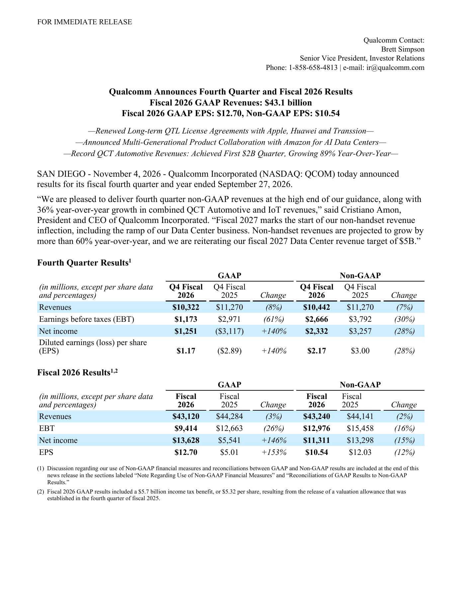
Qualcomm 2026财年第四季官方财报，第1页原页
高通营收降8%，重申数据中心目标
来源: 高通官方财报 · 2026-11-05 · 原文链接
高通11月4日发布2026财年第四季及全年业绩：第四季GAAP营收103.22亿美元，同比下降8%；非GAAP稀释每股收益2.17美元，同比下降28%。QCT汽车业务季度收入首次达到20亿美元、增长89%。公司重申2027财年数据中心收入50亿美元目标，预计非手机收入增长超过60%；这是管理层前瞻目标，不是当期数据中心已实现收入。
Janet 锐评：
同一份财报里，汽车业务大增与总收入下降可以同时成立。数据中心的五十亿美元目标给了下一年的方向，却还没有消除手机业务回落的压力。对一个跨进AI基础设施的芯片商，最有信息量的后续变化，是新业务实际收入何时单独站出来，而不是在今天把未来目标加进已实现的营收。